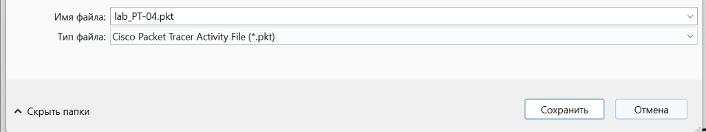
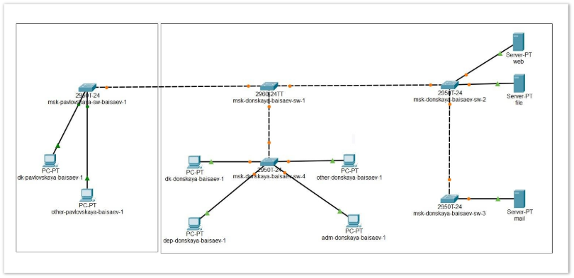
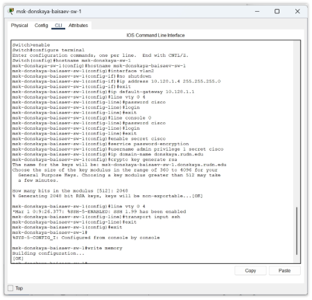
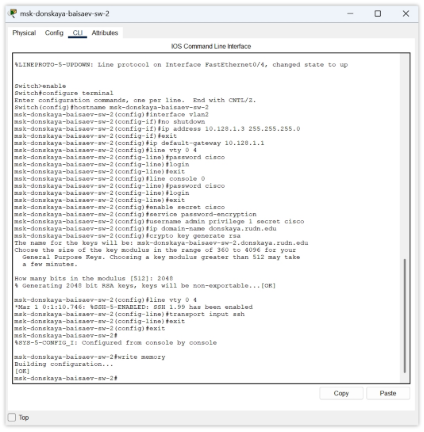
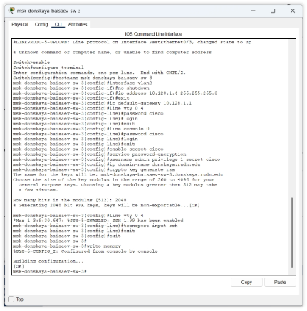
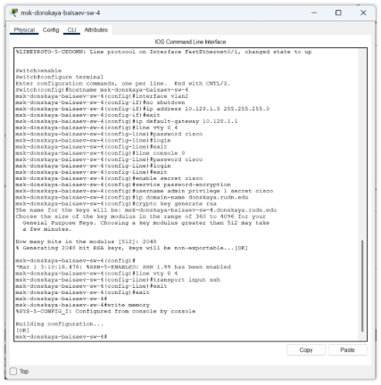
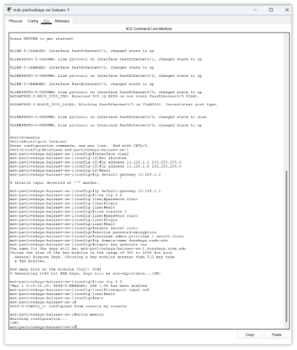

Лабораторная работа №4
Первоначальное конфигурирование сети
Исаев Булат Абубакарович 1132227131
НПИбд-01-22
Новый проект

Рис. 1.1. Создание нового проекта.
Схема L1

Рис. 1.2. Размещение коммутаторов и оконченных устройств согласно схеме сети L1.
Настройка коммутаторов

Рис. 1.3. Настройка коммутатора msk-donskaya-baisaev-sw-1, используя типовую конфигурацию.
Настройка коммутаторов

Рис. 1.4. Настройка коммутатора msk-donskaya-baisaev-sw-2, используя типовую конфигурацию.
Настройка коммутаторов

Рис. 1.5. Настройка коммутатора msk-donskaya-baisaev-sw-3, используя типовую конфигурацию.
Настройка коммутаторов

Рис. 1.6. Настройка коммутатора msk-donskaya-baisaev-sw-4, используя типовую конфигурацию.
Настройка коммутаторов

Рис. 1.7. Настройка коммутатора msk-pavlovskaya-baisaev-sw-1, используя типовую конфигурацию.
Вывод
В ходе выполнения лабораторной работы мы научились проводить подготовительную
работу по первоначальной настройке коммутаторов сети.
Спасибо за внимание!